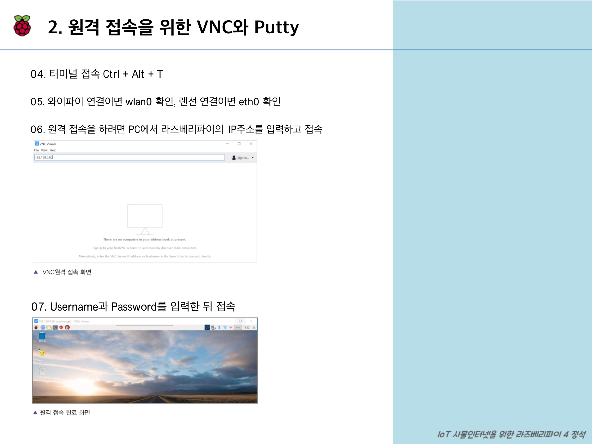
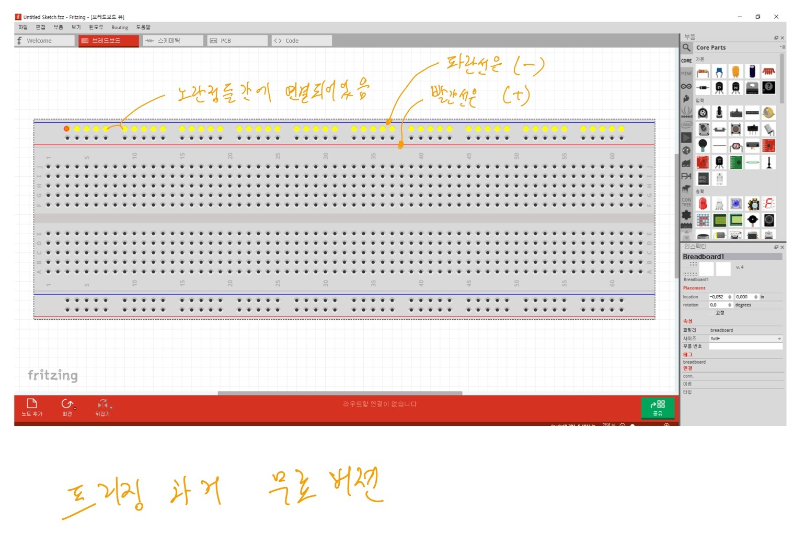
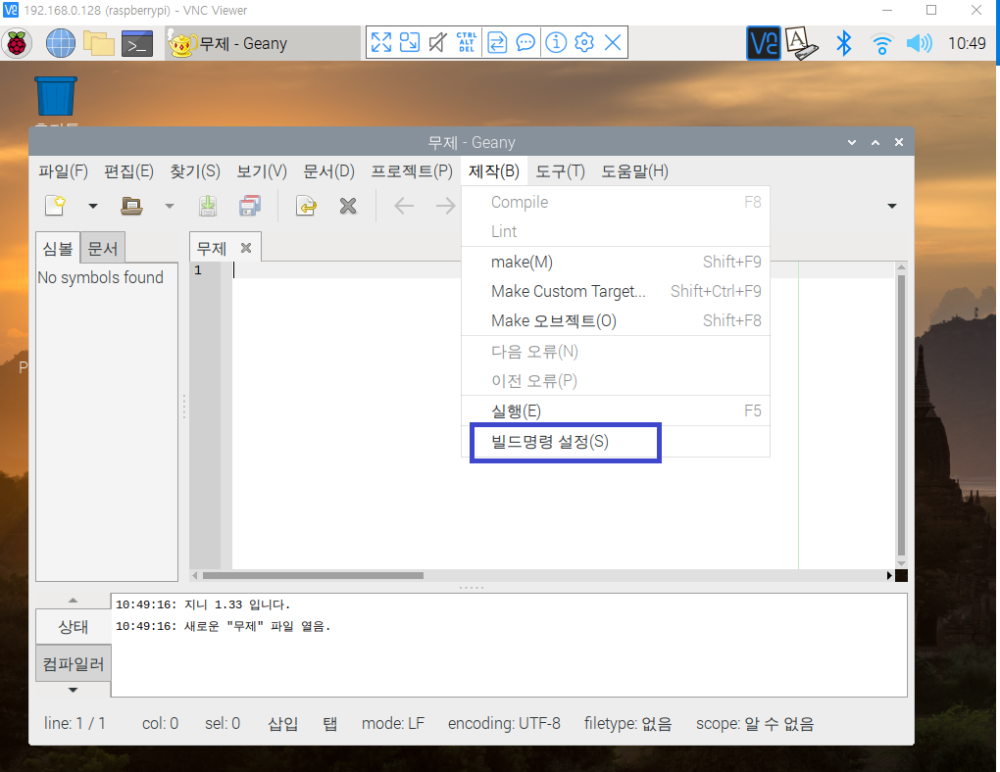
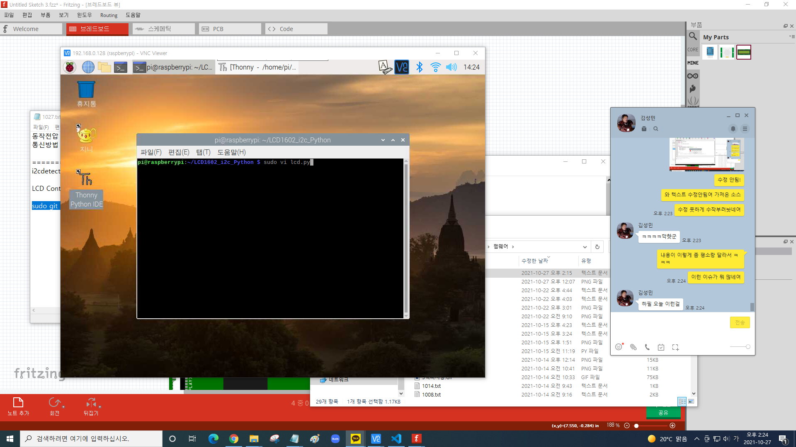

-
라즈베리파이4
- 라즈베리 설치를 위한 리눅스 환경 구축
-
virtualBox 설치전 : CMOS를 통해 가상화 장치 지원 확인
(F2, Del키를 재시작하고 반복터치를 하고 있으면 CMOS로 진입한다.(보통 security 메뉴에 있다.)
https://www.virtualbox.org/
https://www.virtualbox.org/ 버츄얼박스 다운로드 받기(확장팩 포함)
https://ubuntu.com/download 우분투 다운로드 받기(이미지파일)
windows 파일시스템 : ntfs ==> c:/
linux파일시스템 : ext ==> root
linux : kernel(시스템관리), shell(명령어)
버츄얼박스 실행
파일/환경설정/일반-기본머신폴더경로 변경(D:/ubuntu 만들고 경로를 지정_(드라이브 용량에 따라!))
확장팩설치 : 파일/환경설정/확장/새패키지를 선택합니다. 클릭/확장팩 추가 후 설치
네트워크설정 : 파일/환경설정/네트워크/새NAT네트워크 추가합니다.
클릭/선택한 NAT네트워크 편집합니다. 클릭/10.0.2.0/24
==> 192.168.0.0/24로 변경한다.
키보드입력 편집 : 파일/환경설정/입력/가상머신탭 클릭/ 호스트 키 조합(ctrl+alt),
Ctrl-Alt-Del입력(Ctrl-Alt-Ins로 변경)
머신(가상컴퓨터조립)
새로만들기클릭/
이름:Server, 종류 :linux, 버전:ubuntu64bit
=>다음클릭
=>메모리크기(2048)설정
=>하드디스크(가상하드디스크 추가하지않음)클릭
==>만들기 클릭

새하드디스크 추가하기 : 설정아이콘클릭/저장소클릭/컨트롤러:SATA선택
=>하드디스크 추가합니다. 클릭
=> 새디스크만들기
클릭
=>VDI선택
=>동적할당체크
=>다음클릭
=>하드디스크크기(100G)설정
=>만들기클릭
운영체제 설치
CD에 img파일 연결=>확인

시작아이콘을 클릭
=>ubuntuLTS설치 클릭
=>한국어선택
=>계속클릭
=>업데이트다운로드, 그래픽과 와이파이, 하드웨어설치 체크안하고 계속클릭
=>설치형식(기타)선택하고 계속클릭=>
새파티션테이블 클릭하고, 경고창 뜨면 계속버튼 클릭
=>남은공간 선택
=>왼쪽하단의 + 를 클릭
=>4096공간설정, 주파티션, 이 공간이 시작지점, 용도:스왑영역선택하고 ok버튼클릭
남은공간 선택
=> 왼쪽하단의 + 를 클릭
=> 나머지공간 모두설정, 주파티션, 이 공간이 시작지점, 용도:ext4저널링 선택하고,
마운트위치 / 로 지정하고 ok버튼클릭
※ 리눅스 파티션은 루트파티션이라고 부르는 '/' 파티션과 'swap' 파티션 2개만 있어도 운영이 가능하다.
기타마운트 포인트(/boot, /usr, /tmp, /var, /home)는 이런것이 있다.

위 이미지에선 지금 설치버튼이 안보인다.
화면영역이 좁아서 그런것이니
ctrl+alt+home키를 눌러 보기 설정을 변경해주자
운영체제 설치 지금설치 버튼 클릭
=> 경고창 뜨면 파티션 포맷내용 확인
=> 계속버튼 클릭=>위치:서울, 계속번튼클릭
=>키보드배치(한국어(101/104호환))선택
=>계속버튼
클릭=>이름:ubuntu,
컴퓨터이름:server, 사용자이름:ubuntu, 암호선택:ubuntu, 암호확인:ubuntu 설정하고
=>계속버튼 클릭=>재시작 설치완료
종료할때는 꼭 저장하지 않고 꺼야한다?
터미널 열고(우분투 바탕화면 우클릭=>터미널 열기)
ubuntu@server:~$ sudo su - root
[sudo] password for ubuntu: ****** 안보인다.
root@server:~#
- 자동로그인 기능 켬으로 바꾸기 시스템설정/사용자계정=>잠금해제클릭=>끔을 켬으로 전환버튼 클릭
- 업데이트 설정 해제 시스템설정/소프트웨어&업데이트를 클릭한다.
- 네트워크 ip주소 설정 바탕화면 상단 ↑↓아이콘을 클릭하고 유선연결 1을 선택하고, 편집버튼을 누른다.
- 키보드 설정 오른쪽 상단에 키보드 모양클릭/현재입력기 설정클릭
- 화면 보호기 해제 시스템 설정=>밝기와 잠금
- 편집기 설치 편집기 : GUI환경에서 지원하는 편집기 gedit, vi
-
리눅스 shell 명령어
http://launchpad.net/ubuntu/+cdmirrors -
VI 편집기 명령어
-
SD카드 포맷
-
라즈비안 설치
-
원격 접속 프로그램 VNC, Putty
https://www.realvnc.com/en/connect/download/viewer/ -
전자기초
( + ) : 양극, VCC, VDD -
지니 프로그램
-
Thonny
-
GPIO제어
=======================================================#led
-
플라스크
다시시작 후 자동로그인 확인
업데이트 탭 클릭
중요한보안업데이트, 추천하는 업데이트, Backport업데이트를 체크해제하고 닫기를 클릭한다.
이용할수 ~~~경고창이 뜨는데 무시하고 닫기클릭한다.
=>탭 메뉴에서 IPv4설정을 선택한다.
=>방식:수동
=>add버튼을 누른다.
주소: 192.168.0.100
넷마스크:255.255.255.0
게이트웨이:192.168.0.2
DNS 서버:192.168.0.2
저장
$$컴퓨터 네트워크 주소확인 : windows(ipconfig /all) linux(ifconfig)
=>키보드-한국어-한국어(101/104키호환) 선택하고 아래의 - 클릭해서 제거한다.
그러면 오른쪽 상단에 키보드 모양이 태극문양이 나타난다.
한영키전환은(ctrl+space, window+space)한다.
우분투 바탕화면에서 터미널 열기
설치 명령어 :sudo apt-get install vim
deb http://ftp.daumkakao.com/ubuntu/ xenial main restricted
deb http://kr.archive.ubuntu.com/ubuntu/ xenial main restricted
deb http://ftp.daumkakao.com/ubuntu/ xenial restricted
deb http://kr.archive.ubuntu.com/ubuntu/ xenial restricted
deb http://ftp.daumkakao.com/ubuntu/ xenial universe
설치 실패시 저장소 주소 변경 :sudo gedit /etc/apt/sources.list
deb http://ubuntu.cs.utah.edu/ubuntu/ xenial main
deb http://ubuntu.cs.utah.edu/ubuntu/ xenial-updates main
deb http://ubuntu.cs.utah.edu/ubuntu/ xenial universe
deb http://ubuntu.cs.utah.edu/ubuntu/ xenial-updates universe
deb http://ubuntu.cs.utah.edu/ubuntu/ xenial multiverse
deb http://ubuntu.cs.utah.edu/ubuntu/ xenial-updates multiverse
deb http://ubuntu.cs.utah.edu/ubuntu/ xenial restricted
deb http://ubuntu.cs.utah.edu/ubuntu/ xenial-updates restricted
vi편집기 실행은 되지만 에러 문구를 보니 깔끔하지 않게 된거 같다.
ls -l
vi first.txt
clear : 화면의 텍스트를 깨끗이 지운다.
history : 현재까지 진행했던 명령어를 보여준다.
shutdown -h now : 시스템종료 = halt -p
shutdown -r now : 시스템 재부팅 = reboot
-----------------------------------------------------------------------------
ls : 현재 디렉토리 파일 목록
ls -a : 현재 디렉토리 목록(숨김파일 포함)
ls -l : 현재 디렉토리 목록을 자세히 보여봄(영문자 엘)
※ 활용 : ls *.txt .txt로 끝나는 파일을 보여줌.
-----------------------------------------------------------------------------
Change Directory 약자로 디렉터리를 이동하는 명령
cd : 현재 사용자의 홈 디렉터리로 이동, 현재 사용자가 ubuntu면 /home/ubuntu 이다.
cd /etc/systemd/ : /etc/systemd/ 로 이동한다(절대경로)
cd ../etc/systemd/ : ../etc/systemd/ 로 이동한다(상대경로)
-----------------------------------------------------------------------------
경로 설명
/ : 로컬영역의 파일 경로
\\ : 웹상의 파일경로
./ : 현재경로
../ : 현재위치를 기준으로 상위 경로
../../ : 현재위치를 기준으로 상위 상위 경로?
-----------------------------------------------------------------------------
print working directory 약자로 현재 작업디렉토리의 경로를 보여준다.
pwd : 현재 작업 중인 디렉토리 경로 출력
-----------------------------------------------------------------------------
Remove 약자로 파일이나 디렉터리를 삭제한다.(체크: 삭제할 권한이 있어야 가능하다.)
rm aaa.txt
rm -i bbb.txt :삭제 시 정말로 제거할건지 확인하는 메세지가 나온다.
rm -f bbb.txt : 삭제 시 확인하지 않고 삭제한다.(f는 force의 의미)
rm -r aaa : aaa 디렉터리와 그 하위에 있는 디렉터리를 전부 삭제한다.(r는 recursive)
-----------------------------------------------------------------------------
Remove Directory 약자로 디렉터리를 삭제한다. 해당 디렉터리의 삭제 권한이 이어야한다.
해당 디렉터리는 비어있어야한다. 파일이 들어있으면 rm -r을 실행한다.
rmdir ddd : ddd 디렉터리가 삭제된다.
-----------------------------------------------------------------------------
ConCatenate 약자로 파일의 내용을 화면에 보여준다. 여러개 나열하면 파일을 연결해서 보여준다.
cat aaa.txt ccc.txt : aaa.txt와 ccc.txt를 연결해서 파일의 내용을 보여준다.
-----------------------------------------------------------------------------
Copy 약자로 파일이나 디렉터리를 복사한다. 새로 복사한 파일은 복사한 사용자가 소유자가 된다.
cp aaa.txt bbb.txt : aaa.txt를 bbb.txt라는 이름으로 바꿔서 복사
cp -r aaa bbb : 디렉터리 복사, aaa 디렉터리를 bbb 디렉터로 복사
-----------------------------------------------------------------------------
touch는 크기가 0인 새파일을 만든다. 이미 존재한다면 파일의 최종 수정시간만 변경된다.
touch aaa.txt : 크기가 0인 aaa.txt
-----------------------------------------------------------------------------
Move 약자로 파일이나 디렉터리의 이름을 변경하거나, 다른디렉터리로 옮길때 사용한다.
mv aaa.txt ccc.txt : aaa.txt를 ccc.txt로 변경한다.
mv bbb.txt /home/ : bbb.txt를 /home/ 디렉터리로 이동한다.
mv aaa bbb ccc ddd
-----------------------------------------------------------------------------
Make Directory 약자로 새로운 디렉터리를 생성한다. 생성된 디렉터리는 명령을 실행한 사용자의 소유이다.
mkdir aaa :
-----------------------------------------------------------------------------
텍스트 형식으로 작성된 파일을 앞10행 또는 마지막10행만 화면에 출력한다.
head /etc/systemd/bootchart.conf
head -3 /etc/systemd/bootchart.conf
tail -3 /etc/systemd/bootchart.conf :해당파일 마지막 3행을 화면에 출력한다.
------------------------------------------------------------------------------------------
텍스트 형식으로 작성된 파일을 페이지 단위로 화면에 출력한다. space를 누르면 다음페이지로 이동하고 B를 누르면 이전페이지로 이동한다. Q를 누르면 종료한다.
more /etc/systemd/system.conf
more +10 /etc/systemd/system.conf : 10행부터 보여준다.
---------------------------------------------------------------------------------------
more 명령어와 용도가 비슷하지만 기능이 확장된것, 화살표 키나 Page Up, Page Down 을 사용한다.
less /etc/systemd/system.conf
--------------------------------------------------------------------------------------------
해당 파일이 어떤 종류의 파일인지 표시한다.
file /etc/systemd/system.conf :sytem.conf 는 텍스트 파일이므로 아스키 파일(ASCII)로 표시한다.
file /bin/gzip : gzip은 실행 파일이므로 'ELF 64-bit LSB executable' 파일로 표시한다.
--------------------------------------------------------------------------------------------------
특정 명령어의 위치를 전체 경로로 찾아주는 명령어이다.
which rm : rm 명령어의 위치 경로를 보여준다. /bin/rm
--------------------------------------------------------------------------------------------------
실행파일, 소스파일등의 위치를 찾아주는 명령어이다.
whereis aaa.txt : aaa:로 현재 위치를 나타낸다.
-------------------------------------------------------------------------------------------------
찾고자하는 이름의 파일, 디렉터리를 모두 찾아준다.
find *.txt : 현재 경로의 모든 txt파일을 찾아준다.
------------------------------------------------------------------------------------------------
사용자 관리
리눅스 다중 사용자 시스템이다. root 사용자는 시스템의 모든 작업을 실행할 권한이 있다.
사용자 확인을 위해 'vi /etc/passwd' 파일을 연다.
ubuntu:x:1000:1000:ubuntu,,,:home/ubuntu:/bin/bash
사용자:암호:사용자ID:사용자소속그룹ID:추가정보:홈디렉토리:기본 쉘
그룹 확인을 위해 'vi /etc/group'
ubuntu:x:1000:
사용자:암호:사용자ID:
------------------------------------------------------
새로운 사용자를 추가한다. 명령을 실행하면 /etc/passwd, /etc/shadow, /etc/group 새로운 파일이 추가된다.
adduser user1 ==> user1 이라는 이름의 사용자 생성
새 UNIX 암호 입력 : ==> 암호를 생성
새 UNIX 암호 재입력 : ==> 다시 입력
이름 [ ] : ==> 전체 이름 입력(생략가능)
방 번호 [ ] : ==> 사무실 호실(생략가능)
직장 전화번호 [ ] : ==> 회사 전화번호(생략가능)
집 전화번호 [ ] : ==> 집 전화번호(생략가능)
기타 [ ] : ==> 기타 내용(생략가능)
정보가 올바릅니까? [y/n] ==>확인(Enter 누르면 된다.)
adduser --uid 1111 user2 ==>user2 사용자 ID를 1111로 생성한다.
adduser --gid 1111 user3 ==>user3 그룹 ID를 1111로 생성한다.(1111은 user2의 그룹이다.)
adduser --home /newhome user4 ==>user4 사용자는 홈디렉터리를 /newhome으로 지정한다.
adduser --shell /bin/csh user5 ==>user5 사용자는 기본 쉘을 /bin/csh 로 지정했다.
passwd : 사용자의 비밀번호를 바꾼다.
passwd user1 :user1 의 비밀번호를 지정한다.
usermod : 사용자의 속성을 바꾼다.
usermod --shell /bin/bash user5
------------------------------------------------------
사용자 삭제
userdel user4 : user4를 삭제한다. 홈 디렉터리, mail, spool는 삭제되지않는다.
userdel -r user4 : user4사용자를 삭제하면서 홈 디렉터리, mail, spool까지 삭제한다.
사용자가 소속된 그룹확인
groups user1 : 사용자가 소속된 그룹을 보여준다.
새로운 그룹을 생성하기
groupadd --gid 2222 newgroup2
--------------------------------------------------------------------------
파일 소유의 허가권
-rw-r--r-- 1 root root 0 10월 1 10:35 sample.txt
(-)파일유형, (rw-r--r--)파일허가권, (1)링크수, (root)파일소유자, (root)파일소유그룹이름, (0)파일크기, (10월 1 10:35)마지막변경날짜, (sample.txt)파일이름
파일유형 : (d)디렉터리, (-)일반파일, (b)블록디바이스, (C)문자디바이스, (l)링크
파일허가권(permission) : 'rw-', 'r--', 'r--' 3개씩 끊어서 인식한다.(r:읽기, w:쓰기, x:실행)
1번 : 'rw-'(소유자접근권한), 2번 : 'r--'(그룹의접근권한), 3번 : 'r--'(기타사용자 접근권한)
r : read의 약자로 파일을 읽는 권한이다. 숫자로 표현하면 4 (2^2)로 나타낼 수 있다.
w : write의 약자로 파일의 수정 및 삭제 권한이다. 숫자로 표현하면 2(2^1)로 나타낼 수 있다.
x : execute의 약자로 파일에 대한 실행 권한이다. 숫자로 표현하면 1(2^0)으로 나타낼 수 있다.
sample.txt 파일의 허가권을 숫자로 표현할 수 있다.(r : 4, w : 2, x : 1)
소유자 그룹 기타사용자
r w - r - - r - -
4 2 0 4 0 0 4 0 0
6 4 4
sample.txt 의 허가권을 숫자로 표현 : 644
※파일을 제거하는 것은 파일을 쓰는 것으로 간주되지 않고 디렉토리를 쓰는 것으로 간주됩니다!
이것이 content에 대한 권한이없는 경우에도 파일을 지울 수있는 이유입니다.
(즉, 기타 사용자가 파일에 r,w,x에 대한 모든 접근 권한이 없더라도 기타 사용자의 디렉터리 내 파일은 삭제 가능하다. 삭제는 파일 편집이 아닌 디렉토리 권한으로 가능!)
파일의 허가권을 변경하는 명령어 : chmod
chmod u+x '파일이름' : 사용자에게 실행 권한을 추가해준다.
chmod u+x aaa.txt : rwxrw-r--
chmod '지정할대상' + '권한' 파일명
지정할 대상 : u 사용자 / g 그룹 / o 다른사용자 / a 전부
+ : + / -
권한 : r / w / x / -
chmod 755 aaa.txt
사용자에게 소유권을 변경하는 명령어 : chown
chown ubuntu sample.txt ※한번에 사용자와 그룹을 바꾸려면 : chown ubuntu.ubuntu
그룹에게 소유권을 변경하는 명령어 :chgrp
chgrp ubuntu sample.txt
---------------------------------------------------------------------------------------------------
프로그램 설치 패키지 : dpkg(Debian Package), apt-get
dpkg는 의존성이 발생하는 패키지다.
http://kr.archive.ubuntu.com/ubuntu/pool/universe/g/galculator/galculator_2.1.4-1_amd64.deb
이미설치되어 있는지 확인하는 명령어 : dpkg -l
dpkg -l galculator
정보확인 : dpkg --info
dpkg --info gal~~tab키
설치 : dpkg -i gal~~tab
실행 : galculator
삭제 : dpkg -r
dpkg -r galculator
의존성 문제 확인 : mysql
apt-get 명령어는 dpkg 명령어의 패키지 의존을 해결한다.
※radhat 계열 : 설치패키지가 yum을 쓴다.
apt-cache depends mysql-client : 설치 패키지의 정보를 미리확인한다.
패키지설치(apt-get 의존성 해결) : apt-get install mysql-client
확인메시지 '[y/n]'을 생략하려면 apt-get -y install mysql-client (옵션 -y를 준다.)
apt-get 의 작동방식 : apt-get 명령어와 관련된 설정파일은 /etc/apt/디렉터리에 있다.
apt-cache depends mysql-client : 설치 패키지의 정보를 미리확인한다.
의존:mysql-client 5.7
apt-cache depends mysql-client 5.7 : 설치 패키지의 정보를 미리확인한다.
의존:mysql-client-core-5.7 외 다수파일
패키지설치(apt-get 의존성 해결) : apt-get install mysql-client
확인메시지 '[y/n]'을 생략하려면 apt-get -y install mysql-client (옵션 -y를 준다.)
apt-get 의 작동방식 : apt-get 명령어와 관련된 설정파일은 /etc/apt/디렉터리에 있다.
sources.list 파일에 apt-get 명령을 실행했을때 인터넷에서 해당 패키지 파일을 검색하는 네트워크 주소가 들어있다.
(main패키지, universe패키지, multiverse패키지,
restricted패키지)
apt-get update : 설정정보를 현재 일자에 맞춰 수정한다.
apt-get upgrade : 시스템 변경(하면안됨)
파일 압축과 묶기
리눅스에서 사용하는 확장명 xz, bz2, gz, zip, Z등이 있다.
압축-------------------------------------------------------------------------
-------------xz : 확장명 xz로 압축하거나 풀어준다.-----------------------
xz 파일이름 : 파일이름을 압축파일인 '파일이름.xz' 로 만든다.
xz -d 파일이름.xz(d는 Decompress의 의미다.) : '파일이름.xz'의 압축을 풀어서 '파일이름'으로 만든다.
xz -l 파일이름.xz(l은 list 의 의미다.) :파일이름.xz'의 압축파일에 포함된 파일 목록과 압축률을 보여준다.
xz -k 파일이름.xz(k은 keep 의 의미다.) :압축 후에 기존 파일을 삭제하지 않고 그대로 둔다.
-------------bzip2 : 확장명 bzip2로 압축하거나 풀어준다.-----------------------
bzip2 파일이름 : 파일이름을 압축파일인 '파일이름.bz2' 로 만든다.
bzip2 -d 파일이름.bz2(d는 Decompress의 의미다.)==bunzip2: '파일이름.bz2'의 압축을 풀어서 '파일이름'으로 만든다.
bzip2 -k 파일이름.bz2(k은 keep 의 의미다.) :압축 후에 기존 파일을 삭제하지 않고 그대로 둔다.
-------------gzip : 확장명 gzip로 압축하거나 풀어준다.-----------------------
gzip 파일이름 : 파일이름을 압축파일인 '파일이름.gz' 로 만든다.
gzip -d 파일이름.gz(d는 Decompress의 의미다.)==gunzip2: '파일이름.gz'의 압축을 풀어서 '파일이름'으로 만든다.
-------zip/unzip : Windows용과 호환되는 확장명 zip으로 압축하거나 풀어준다.------
zip 새로생성될파일이름.zip 압축할파일이름 : '압축할파일이름'을 '새로생성될파일이름.zip'으로 만든다.
unzip 압축할파일이름.zip : '압축파일이름.zip'의 압축을 푼다. 압축 파일은 그대로 남아 있다.
파일묶기---------------------------------------------------
리눅스(유닉스)에서는 '파일압축' 과 '파일묶기' 는 원칙적으로 별개의 프로그램이다.
파일묶기의 명령어는 tar이며 묶어진 파일의 확장명도 tar이다.
tar : 확장명도 tar로 묶음파일을 만들어 주거나 묶음을 푼다.
[동작]
c(소문자) : 새로운 묶음을 만든다.
x : 묶인 파일을 푼다.
t : 묶음을 풀기 전에 묶인 경로를 보여준다.
C(대문자):묶음을 풀때 지정된 디렉터리에 압축을 푼다. 지정하지 않으면 묶을때와 동일한 디렉터리에 풀린다.
[옵션]
f(필수) : 묶음 파일 이름 지정, 원래 tar은 테이프(tape)장치 백업이 기본이다.(생략하면 테이프로 보내진다.)
v : visual의 의미로 파일이 묶이거나 풀리는 과정을 보여준다.(생략가능)
J(대문자) : tar + xz
z(소문자) : tar + gzip
j(소문자) : tar + bzip2
--------------------묶기 + 압축---------------------------------------
tar cvf my.tar /etc/systemd/ : 현재 경로에 my.tar 가 생성된다.
tar cvfJ my.tar.xz /etc/systemd/ : 현재 경로에 my.tar.xz 가 생성된다.
tar cvfz my.tar.gz /etc/systemd/ : 현재 경로에 my.tar.gz 가 생성된다.
tar cvfj my.tar.bz2 /etc/systemd/ : 현재 경로에 my.tar.gz 가 생성된다.
-------------파일확인-----------------------------------------------
tar tvf my.tar : 파일 확인
-------------tar 풀기-------------------------------------------------
tar xf my.tar : tar 풀기
tar Cxf newdir my.tar : newdir tar 풀기
-------------압축해제 + tar 풀기------------------------------------
tar xfJ my.tar.xz : xz 압축해제 + tar 풀기
tar xfz my.tar.gz : gz 압축해제 + tar 풀기
tar xfj my.tar.bz2 : bzip2 압축해제 + tar 풀기
================================================
mkdir permission
퍼미션 디렉터리의 권한을 소유자는 읽기, 쓰기, 실행가능하게 소유그룹은 읽기만 기타사용자는 권한없음.
sudo chmod 740 permission
현재디렉터리 : ~
일반사용자 : $
관리사용자 : #
tree : 디렉터리 구조를 트리 모양으로 출력
cd(change directory)
cd /디렉터리 : 루트디렉터리 기준으로 "디렉터리"로 이동
cd 디렉터리 : 현 디렉터리를 기준으로 '디렉터리'로 이동
cd ~ : 현재 사용자 home 디렉터리로 이동
cd .. : 현 디렉터리에서 상위 '디렉터리'로 이동
cd ../디렉터리 : 상위 디렉터리를 기준으로 '디렉터리'로 이동
mkdir : 디렉터리 생성
sudo mkdir dir1
mkdir -p dir2/dir2_1
※ -p 옵션을 사용하면 디렉터리를 만들때 상위(부모) 디렉터리가 없으면 상위 디렉터리를 같이 생성한다.
디렉터리 삭제 : rmdir -p dir2/dir2_1
※ -p 옵션을 사용하면 상위 디렉터리도 함께 삭제한다.
파일 위치 찾기
which : [명령어 이름]
which rmdir
whereis : [명령어 이름]
which 명령어보다 좀더 상세한 내용을 찾아준다.
※ 옵션 : -b(바이너리), -m(매뉴얼), -s(소스)
stat : [파일이름] : 새로 생성된 파일의 자세한 정보를 확인한다.
stat test.txt
chmod : 권한변경
옵션 : u(사용자), g(그룹), o(기타사용자)
chmod[권한][파일이름]
chmod g+w test.txt : 그룹에 쓰기 권한 추가
chmod g-w test.txt : 그룹에 쓰기 권한 삭제
chmod o+w test.txt : 기타사용자에 쓰기 권한 추가

라즈베리 설치 후 기본설정
1. wifi 설정
2. 운영체제 업데이트 : sudo apt-get update
※ upgrade는 하지 않는다. (시스템이 변경되기 때문이다.)
3. 한글설정 : 메인메뉴(딸기아이콘)-Preferences(기본설정)-Raspberry Pi Configuration를 선택
- 라즈베이파이 환경 설정 창(Raspberry Pi Configuration)에서 Localisation-Set Timezone-Asia/Seoul을 클릭
4. 키보드설정 : 라즈베이파이 환경 설정 창(Raspberry Pi Configuration)에서 Localisation-Set Keyboard을 클릭
-(Model : Generic 105-key(intl) pc, Layout:Korea, Variant:Korean(101/104 key compatible))
5. 한글 입력을 위한 ibus 설치
sudo apt-get install ibus
6. ibus-hangul을 설치
sudo apt-get install ibus-hangul
7. 폰트설치
sudo apt-get install fonts-unfonts-core
8. 재부팅
sudo reboot
9. 한글입력기 nabi를 설치
sudo apt-get install nabi
10. 한글설정을 위한 세부설정
메인메뉴(딸기아이콘)-Preferences(기본설정)-input Method(입력기)-[OK]버튼 클릭
11. [YES]버튼 클릭
대화상자내용 : input Method Configuration (im-config ver. 0.30.1)
Do yon explicity select the user Configuration?
Select yes or no ?
12. 다음창에서 "hangul" 라디오 버튼을 체크하고 [OK] 버튼을 클릭
※ "hangul" 한글이 나오지 않는 경우는 Set Locale을 먼저 설정하였기 때문이다.
(Language : ko (Korea), Country : KR (South Korea), Chracter Set : UTF-8)
13. [Cancel] 버튼을 클릭한다.
---------------------------원격접속을 위한 고정ip설정--------------------
1. ifconfig : ip를 확인 후 주소를 기억한다.
2. VNC 원격접속 후 ip주소 입력 엔터
id : pi
passwd : raspberry
3. 유동IP를 고정IP로 설정
터미널에서 : sudo vi /etc/dhcpcd.conf
※ shift + : set number
interface wlan0
static ip_address=192.168.0.129
static routers=192.168.0.1
static domain_name_servers=8.8.8.8
설정 후 저장
====================라즈베리화면설정===========
1. 화면설정
처음 한번은 반드시 모니터 화면을 써야된다.
이유는 모니터 크기정보를 라즈베리가 부팅할때 필요한 정보이다.
※ 추후 모니터 없이 접속을 하게되면 블랙화면이 뜬다. 이유는 모니터 정보가
없기때문이다. 그래서 처음 사용이후 모니터 크기정보를 설정해야된다.
설정방법 : sudo raspi-config 실행
- 설정정보창에서 2번 display option선택 엔터 - D1 Resolution 선택 엔터
- Choose screen Resolution에서 CEA 4 mode(1280 x 720 60Hz 16:9)를 선택
- tab키를 누르면 <확인> 으로 이동 후 엔터를 누른다.
=======================================================
====================기타원격접속======================
1. SSH(Secure Shell) 사용
https://www.putty.org 접속
2. vsftpd 서버 설치
sudo apt-get install vsftpd
※ 옵션 수정 : sudo vi /etc/vsftpd.conf
#(주석해제) : 25번, 28번, 31번, 35번, 122번, 123번, 125번
3. ftp 서비스 시작
서비스실행 : sudo service vsftpd restart
서비스상태 : sudo systemctl status vsftpd
부팅될때마다 서비스실행 설정 : sudo systemctl enable vsftpd
4. ftp 클라이언트 설치 및 접속
http://filezilla-project.org/
※ 실행 : 호스트[라즈베리 ip주소], 사용자명[pi], 비밀번호[비밀번호입력], 포트[21] 로 설정하고 연결을 클릭
5. 삼바(Samba) 서버 구축
리눅스와 윈도우 간에 파일 및 프린터를 공유할수 있도록 해 주는 프로그램이다.
삼바설치 : sudo apt-get install samba samba-common-bin
※ dhcp 사용 환경의 경우 대화창이 뜨고, 먼저 <확인> 엔터치고 <예>를 선택하여 엔터한다.
6. 삼바(Samba) 계정 추가
smbpasswd 명령어에 -a 옵션을 주고 "삼바 계정 이름" 형식으로 사용자 ID와 비밀번호를 추가한다.
계정추가 명령 : sudo smbpasswd -a pi
※ 새 비밀번호 설정 :
새 비밀번호 확인 :
7. 삼바 서버 설정 파일 수정(/etc/samba/smb.conf)
설정파일수정 : sudo vi /etc/samba/smb.conf
[pi]
comment = pi shared folder
path = /home/pi
valid users = pi
browseable = yes
guest ok = no
read only = no
create mask = 0777
※ 저장내용을 적용하기 위해서 삼바 서버 서비스 시작
sudo /etc/init.d/smbd restart
sudo /etc/init.d/nmbd restart
8. 삼바 서버 접속
윈도우 PC에서 폴더열고- 찾기(\\라즈베리 IP주소 입력)
id=pi 비밀번호=raspberry


.jpg)
.jpg)
.jpg)
.jpg)
.jpg)
.jpg)
.jpg)
.jpg)
.jpg)
.jpg)
.jpg)
.jpg)
.jpg)
.jpg)
.jpg)
.jpg)
.jpg)
.jpg)
.jpg)

https://www.chiark.greenend.org.uk/~sgtatham/putty/latest.html
( - ) : 음극, 접지, GND

.jpg)
.jpg)
.jpg)
.jpg)
.jpg)
.jpg)
.jpg)
.jpg)
.jpg)
.jpg)
.jpg)
.jpg)
.jpg)
.jpg)
.jpg)
.jpg)
.jpg)
.jpg)
.jpg)
.jpg)
.jpg)
.jpg)
.jpg)
.jpg)
.jpg)
.jpg)
.jpg)
.jpg)
.jpg)
.jpg)
.jpg)
.jpg)
.jpg)
.jpg)
.jpg)
.jpg)
==================라즈베리파이(지니설정)=========
Compile python3 -m py_compile
Lint pep8 --max-line-length
(.+):([0-9]+):([0-9]+)
python3 "%f"

#led
#-*- coding:utf-8 -*-
import RPi.GPIO as GPIO
import time
LED1=4
GPIO.setmode(GPIO.BCM)
#GPIO.setmode(GPIO.BCM) BCM : GPIO+number
#GPIO.setmode(GPIO.Board)
GPIO.setup(LED, GPIO.OUT)
GPIO.setwarnings(False)
for i in range(1,20):
GPIO.output(LED, True)
time.sleep(1)
GPIO.output(LED, False)
time.sleep(1)
=======================================================#led_button
#led_button
import RPi.GPIO as GPIO
import time
LED = 4
KEY = 5
GPIO.setmode(GPIO.BCM)
GPIO.setup(LED, GPIO.OUT)
GPIO.setup(KEY, GPIO.IN)
try:
while True:
if GPIO.input(KEY)==True:
GPIO.output(LED, True)
elif GPIO.input(KEY)==False:
GPIO.output(LED, False)
except KeyboardInterupt:
pass
finally:
GPIO.cleanup()
=======================================================#button_uart
#button_uart
import RPi.GPIO as GPIO
import time
button_pin=15
GPIO.setwarnings(False)
GPIO.setmode(GPIO.BCM)
GPIO.setup(button_pin, GPIO.IN, pull_up_down=GPIO.PUD_DOWN)
while True:
if GPIO.input(button_pin)==GPIO.HIGH:
print("Button pushed!!")
time.sleep(0.1)
GPIO.cleanup()
=======================================================#Led_Led
#Led_Led
#-*- coding:utf-8 -*-
import RPi.GPIO as GPIO
import time
LED1=4
LED2=5
GPIO.setmode(GPIO.BCM)
#GPIO.setmode(GPIO.BCM) BCM : GPIO+number
#GPIO.setmode(GPIO.Board)
GPIO.setup(LED1, GPIO.OUT)
GPIO.setup(LED2, GPIO.OUT)
GPIO.setwarnings(False)
for i in range(1,20):
GPIO.output(LED1, True)
GPIO.output(LED2, False)
time.sleep(1)
GPIO.output(LED1, False)
GPIO.output(LED2, True)
time.sleep(1)
=======================================================#Led_PWM
#-*- coding:utf-8 -*-
import RPi.GPIO as GPIO
import time
LED=18
GPIO.setmode(GPIO.BCM)
#GPIO.setmode(GPIO.BCM) BCM : GPIO+number
#GPIO.setmode(GPIO.Board)
GPIO.setup(LED, GPIO.OUT)
GPIO.setwarnings(False)
p=GPIO.PWM(LED, 50)
p.start(0)
try:
while 1:
for dc in range(0,101,5):
p.ChangeDutyCycle(dc)
time.sleep(0.1)
for dc in range(100,-1,-5):
p.ChangeDutyCycle(dc)
time.sleep(0.1)
except KeyboardInterrupt:
pass
p.stop()
GPIO.cleanup()
=======================================================#button_led_pull_down
#button_led_pull_down
import RPi.GPIO as GPIO
import time
button=15
led=4
GPIO.setwarnings(False)
GPIO.setmode(GPIO.BCM)
GPIO.setup(button, GPIO.IN, pull_up_down=GPIO.PUD_DOWN)
GPIO.setup(led, GPIO.OUT)
light = False
def button_callback(channel):
global light
if light == False:
GPIO.output(led,1)
print("LED ON!")
else:
GPIO.output(led,0)
print("LED OFF!")
light = not light
GPIO.add_event_detect(button,GPIO.RISING,callback=button_callback, bouncetime=300)
while 1:
time.sleep(0.1)
=======================================================#passive_buzzer
#passive_buzzer
#-*- coding: utf-8 -*-
import RPi.GPIO as GPIO
import time
GPIO.setwarnings(False)
GPIO.setmode(GPIO.BCM)
gpio_pin=18
#0,do 1,do^ 2,le 3,le^ 4,me 5,pa 6,pa^ 7,sol 8,sol^ 9,la 10,la^ 11,si
scale=[261, 277, 293, 311, 329, 349, 369, 391, 415, 440, 466, 493]#
GPIO.setup(gpio_pin, GPIO.OUT)
list=[7,9,11,9,11,11,11,9,11]
try:
p=GPIO.PWM(gpio_pin,100)
p.start(100)
p.ChangeDutyCycle(90)
for i in range(7):
p.ChangeFrequency(scale[list[i]])
time.sleep(0.5)
finally:
GPIO.cleanup()
=======================================================#RGB_LED
#RGB_LED
#-*- coding: utf-8 -*-
import RPi.GPIO as GPIO
import time
pin = (24,10,9)
def led(pin, color, t) :
RGB = (
(1, 1, 1), # white
(1, 0, 0), # red
(1, 0, 0),
(0, 0, 1),
(0, 1, 1),
(1, 0, 1), # purple
(1, 1, 0), # yellow
)
GPIO.setmode(GPIO.BCM)
GPIO.setup(pin[0], GPIO.OUT)
GPIO.setup(pin[1], GPIO.OUT)
GPIO.setup(pin[2], GPIO.OUT)
GPIO.output(pin[0], RGB[color][0])
GPIO.output(pin[0], RGB[color][1])
GPIO.output(pin[0], RGB[color][2])
time.sleep(t)
GPIO.cleanup(pin)
led(pin, 2, 10)
=======================================================#초음파(EHCO) 센서
위 프리저 이미지는 5v를 3.3v로 강하하기 위해 회로가 조금 복잡하지만
라즈베리파이4 보드에는 3.3v 핀도 있으므로 3.3v핀을 바로 사용하면 된다.
import RPi.GPIO as GPIO
import time
GPIO.setmode(GPIO.BCM)
GPIO.setwarnings(False)
TRIG = 23
ECHO=24
print("Distance measurement in progress")
GPIO.setup(TRIG, GPIO.OUT)
GPIO.setup(ECHO, GPIO.IN)
GPIO.output(TRIG, False)
print("waiting for sensor to settle")
time.sleep(2)
try:
while True:
GPIO.output(TRIG, True)
time.sleep(0.00001)
GPIO.output(TRIG, False)
while GPIO.input(ECHO)==0:
start = time.time()
while GPIO.input(ECHO)==1:
stop = time.time()
check_time = stop - start
distance = check_time * 34300/2
print("Distance : %.1f cm" %distance)
time.sleep(0.4)
except KeyboardInterrupt:
print("Measurement stopped by User")
GPIO.cleanup()
=======================================================#pwm(servo_motor)
import RPi.GPIO as GPIO
import time
SERVO_PIN = 18
GPIO.setwarnings(False)
GPIO.setmode(GPIO.BCM)
GPIO.setup(SERVO_PIN, GPIO.OUT)
servo = GPIO.PWM(SERVO_PIN,50)
servo.start(0)
try:
while True:
servo.ChangeDutyCycle(0)
time.sleep(1)
servo.ChangeDutyCycle(2.5)
time.sleep(1)
servo.ChangeDutyCycle(5)
time.sleep(1)
servo.ChangeDutyCycle(7.5)
time.sleep(1)
servo.ChangeDutyCycle(10)
time.sleep(1)
servo.ChangeDutyCycle(12.3)
time.sleep(1)
servo.ChangeDutyCycle(14)
time.sleep(1)
except KeyboardInterrupt:
servo.stop()
GPIO.cleanup()
=======================================================#led_led_ball_swtich
import RPi.GPIO as GPIO
import time
b_sw=16
led_r=23
led_g=24
GPIO.setwarnings(False)
GPIO.setmode(GPIO.BCM)
GPIO.setup(b_sw, GPIO.IN, GPIO.PUD_UP)
GPIO.setup(led_r, GPIO.OUT)
GPIO.setup(led_g, GPIO.OUT)
def turn_ledB(self):#self is like to void that no return values.
GPIO.output(led_r, GPIO.HIGH)
time.sleep(1)
GPIO.output(led_g, GPIO.LOW)
GPIO.add_event_detect(b_sw, GPIO.FALLING, turn_ledB)
#FALLING
#RISING
try:
while True:
GPIO.output(led_r, GPIO.LOW)
time.sleep(0.5)
GPIO.output(led_g, GPIO.HIGH)
time.sleep(0.5)
except KeyboardInterrupt:
GPIO.cleanup()
=======================================================#DHT11습도센서
============터미널에서 설치===================
DHT11 다운로드 및 설치
구글에서 Adafruit dht를 검색한다.
공통패키지 설치
Python 3버전
sudo apt-get update
sudo apt-get install -y python3 python3-pip python-dev
sudo pip3 install rpi.gpio
DHT라이브러리 설치
sudo apt-get install build-essential python-dev
DHT소스 다운로드 및 설치
git clone https://github.com/adafruit/Adafruit_Python_DHT.git
cd Adafruit_Python_DHT
sudo python setup.py install
DHT동작
cd example
sudo ./AdafruitDHT.py 11 2
=======================================================pinout
=======================================================
sudo vi /usr/local/lib/python3.7/dist-packages/Adafruit_DHT/platform_detect.py
111번~112번 라인을 추가
108 elif match.group(1) == 'BCM2837':
109 # Pi 3b+
110 return 3
111 elif match.group(1) == 'BCM2711':
112 return 3
113 else:
=============코드 작성=======================
import Adafruit_DHT
import time
from datetime import datetime
DHT_SENSOR = Adafruit_DHT.DHT22
DHT_PIN = 2
PROBE_NAME = "PI4"
humidity, temperature = Adafruit_DHT.read_retry(DHT_SENSOR, DHT_PIN)
if humidity is not None and temperature is not None:
print("{2} - T={0:0.1f} H={1:0.1f}".format(temperature, humidity, datetime.now()))
else:
print("Failed to retrieve data from humidity sensor")
=======================================================#PIR_SENSOR
import RPi.GPIO as GPIO
import time
led_R = 20
led_y = 21
sensor = 17
GPIO.setwarnings(False)
GPIO.setmode(GPIO.BCM)
GPIO.setup(led_R, GPIO.OUT)
GPIO.setup(led_y, GPIO.OUT)
GPIO.setup(sensor, GPIO.IN)
print("PIR Ready...")
time.sleep(1)
try:
while True:
if GPIO.input(sensor) ==1:
GPIO.output(led_y, 1)
GPIO.output(led_R, 0)
print("Motion Detected !")
time.sleep(0.2)
if GPIO.input(sensor) ==0:
GPIO.output(led_R, 1)
GPIO.output(led_y, 0)
print("ho woo!")
time.sleep(0.2)
except KeyboardInterrupt:
print("Stopped by User")
GPIO.cleanup()
=======================================================#LDR_sensor
#Libraries
import RPi.GPIO as GPIO
from time import sleep
#Set warnings off (optional)
GPIO.setwarnings(False)
GPIO.setmode(GPIO.BCM)
#Set Button and LED pins
Button = 13
LED = 18
#Setup Button and LED
GPIO.setup(Button,GPIO.IN,pull_up_down=GPIO.PUD_UP)
GPIO.setup(LED,GPIO.OUT)
#flag = 0
while True:
button_state = GPIO.input(Button)
print(button_state)
if button_state == 0:
GPIO.output(LED,GPIO.HIGH)
else:
GPIO.output(LED,GPIO.LOW)
sleep(1)
'''
if button_state==0:
sleep(0.5)
if flag==0:
flag=1
else:
flag=0
if flag==1:
GPIO.output(LED,GPIO.HIGH)
else:
GPIO.output(LED,GPIO.LOW)
'''
=======================================================#i2c_제어(LCD제어)
수업 첫 시작 환경 설정 은 아래 이미지 참고
#설명
LCD16
동작전압 : 5V
통신방법 : IIC / I2C
sda:데이터
scl:클락신호
프리징에서 i2c맞는거 없어서 구글링
>>fritzing i2c
https://forum.fritzing.org/t/16x2-i2c-lcd-part/2041
화면 조금 내리면 다운로드 파일
프리징 작성 후
회로연결
터미널에
i2cdetect -y 1

lcd구동하고 뒤에 센서 조절하면 LCD모니터 출력됨!
가져온 텍스트 수정 안됨

편집모드 i와 esc키 누른 후 x버튼 번갈아가며 편집

헬로월드로 수정
환경설정
lcd가동하고 나서는 컨트롤 +C 누르면 프로그램 종료되고 터미널 명령어 입력 가능
3번 예제 같은 경우 30번에 time.sleep(0.4)으로 수정되어야 함
루프백 주소:도메인 이름: 인터넷 연결에 대한 체크 할수 있게끔 내부적인 실행주소
여튼 네이버 게이트의 번호는 www.공통 :80이듯
플라스크는 :5000
페이지173 터미널 설치시작
host="0.0.0.0" 은 모든 아이피를 받겟다는 의미므로 내 아이피만 받고 싶으면 여기를 바꾸면 된다

여기 보이는 ip를 넣어도 된다는 말
3번줄 뒤에 "/led"라고 하면 주소값이 바뀜
보드에 불 들어옴
아까 led on을 저렇게 수정
led작동 3번째 방법
.jpg)
.jpg)
.jpg)
.jpg)
.jpg)
.jpg)
[CSS]CSS가 안먹을때 진행
shift+alt+i 키를 눌러 디버깅 툴을 실행한다.
CSS가 안먹히는 이유
01. 캐시문제
02. 그전에 쓰였던 CSS와 충돌
03. 겹쳐서 안 보이는 경우
1번경우 해결책
01. 캐시 문제
css를 고쳤는데도 그전과 똑같이 보인다면, 브라우저가 저장해놓은 캐시를 사용하기 때문에 그전에 내용을 그대로(수정되기 전) 보이는 경우가 많다. 해결책으로는 브라우저의 캐시를 지우거나, 파일명을 변경해주는 방법이 했다.
[A. 크롬 브라우저 캐시 삭제 방법]
브라우저 오른쪽 상단 점버튼 > 도구 더보기 > 인터넷 사용 기록 삭제 클릭
[B. link된 css의 파일명에 버전 붙이기]
기존 :
변경 :
?ver=1 " 버전명 붙여준 링크 css의 파일명 뒤에 ?ver=넘버 형태로 붙여주면 브라우저가 기존 url과 다른 url로 인식해서 새로 파일을 불어오게 됩니다.
참고 싸이트
카메라 모듈
sudo apt-get update
sudo apt-get upgrade
sudo rpi-update
sudo reboot
raspi still --help
raspvid --help
import picamera
import time
with picamera.PiCamera() as camera:
camera.resolution=(640, 480)
camera.start_preview()
time.sleep(1)
camera.capture('cos.jpg')
camera.stop_preview()
====================================================
class : extends
enum : 열거형
interface(final, abstract method) : implements
void sum(){
}
void sum();
interface A{
void sum();
}
class B implements A{
void sum(){
}
}
JSON : { "A" : "홍길동" }
======================================================
https://www.linux-projects.org/uv4l/installation/
curl https://www.linux-projects.org/listing/uv4l_repo/lpkey.asc | sudo apt-key add -
sudo nano /etc/apt/sources.list
deb https://www.linux-projects.org/listing/uv4l_repo/raspbian/stretch stretch main
sudo apt-get update
sudo apt-get install uv4l uv4l-raspicam
sudo apt-get install uv4l-raspicam-extras
sudo rpi-update
sudo service uv4l_raspicam restart
dd if=/dev/video0 of=snapshot.jpeg bs=11M count=1
sudo apt-get install uv4l-server uv4l-uvc uv4l-xscreen uv4l-mjpegstream uv4l-dummy uv4l-raspidisp
sudo apt-get install uv4l-webrtc
openssl genrsa -out selfsign.key 2048 && openssl req -new -x509 -key selfsign.key -out selfsign.crt -sha256
나라이름 : KO
sudo apt-get install uv4l-xmpp-bridge
===============설치 완료 후=======================
uv4l-server가 작동하는지 확인 : 8080 포트 확인.
sudo reboot
netstat -nlpt
http://localhost:8080
===========UV4L제거====================
sudo apt-get remove [패키지명] # 일반삭제
sudo apt-get --purge remove #설정까지 모두 삭제
sudo apt-get --purge remove uv4l uv4l-raspicam
sudo apt-get --purge remove uv4l-raspicam-extras
sudo apt-get --purge remove uv4l-webrtc
sudo apt-get --purge remove uv4l-xmpp-bridge
==========================================
Motion 감지
https://motion-project.github.io/motion_config.html
sudo apt-get install motion
sudo nano /etc/motion/motion.conf
-- nano edit numberline : alt+shift+# --
-- nano edit search text : ctrl+w --
/home/pi/motion
=======================================
sudo service motion stop
sudo service motion start
sudo motion -b
netstat -nlpt
=================Opencv 안면인식==============
https://pimylifeup.com/raspberry-pi-opencv
https://opencv24-python-tutorials.readthedocs.io/en/latest/py_tutorials/py_objdetect/py_face_detection/py_face_detection.html
=====================설치===================
sudo apt update
sudo apt upgrade
sudo apt install cmake build-essential pkg-config git
sudo apt install libjpeg-dev libtiff-dev libjasper-dev libpng-dev libwebp-dev libopenexr-dev
sudo apt install libavcodec-dev libavformat-dev libswscale-dev libv4l-dev libxvidcore-dev libx264-dev libdc1394-22-dev libgstreamer-plugins-base1.0-dev libgstreamer1.0-dev
sudo apt install libgtk-3-dev libqtgui4 libqtwebkit4 libqt4-test python3-pyqt5
sudo apt install libatlas-base-dev liblapacke-dev gfortran
sudo apt install libhdf5-dev libhdf5-103
sudo apt install python3-dev python3-pip python3-numpy
====dphys-swapfile을 나노 에디터로 열어 CONF_SWAPSIZE=2048로 수정========
sudo nano /etc/dphys-swapfile
CONF_SWAPSIZE=2048
sudo systemctl restart dphys-swapfile
git clone https://github.com/opencv/opencv.git
git clone https://github.com/opencv/opencv_contrib.git
mkdir ~/opencv/build
cd ~/opencv/build
cmake -D CMAKE_BUILD_TYPE=RELEASE \
-D CMAKE_INSTALL_PREFIX=/usr/local \
-D OPENCV_EXTRA_MODULES_PATH=~/opencv_contrib/modules \
-D ENABLE_NEON=ON \
-D ENABLE_VFPV3=ON \
-D BUILD_TESTS=OFF \
-D INSTALL_PYTHON_EXAMPLES=OFF \
-D OPENCV_ENABLE_NONFREE=ON \
-D CMAKE_SHARED_LINKER_FLAGS=-latomic \
-D BUILD_EXAMPLES=OFF ..
make -j$(nproc)
sudo make install
sudo ldconfig
sudo nano /etc/dphys-swapfile
sudo systemctl restart dphys-swapfile
python3
import cv2
==============================설치완료==========================
import cv2
img_file="./img_1.png" #image path
img=cv2.imread(img_file) #image read
if img is not None :
img_resize=cv2.resize(img, (800, 600)) #image resize
cv2.imshow("IMG", img_resize)
cv2.waitKey() #key input wait
cv2.destoryAllWindows() #all window close
else:
print("Image file not found!!")
================cv2 motion check==================
import cv2
import numpy as np
threshold_move = 50 # 달라진 픽셀 값 기준치 설정
diff_compare = 10 # 달라진 픽셀 갯수 기준치 설정
cap = cv2.VideoCapture(0, cv2.CAP_V4L)
cap.set(cv2.CAP_PROP_FRAME_WIDTH, 320) # 영상의 폭을 320 으로 설정
cap.set(cv2.CAP_PROP_FRAME_HEIGHT, 240) # 영상의 높이를 240 으로 설정
ret, img_first = cap.read() # 1번재 프레임 읽기
ret, img_second = cap.read() # 2번재 프레임 읽기
while True:
ret, img_third = cap.read() # 3번째 프레임 읽기
scr = img_third.copy() # 화면에 다른점 표시할 이미지 백업
# 그레이 스케일로 변경
img_first_gray = cv2.cvtColor(img_first, cv2.COLOR_BGR2GRAY)
img_second_gray = cv2.cvtColor(img_second, cv2.COLOR_BGR2GRAY)
img_third_gray = cv2.cvtColor(img_third, cv2.COLOR_BGR2GRAY)
# 이미지간의 차이점 계산
diff_1 = cv2.absdiff(img_first_gray, img_second_gray)
diff_2 = cv2.absdiff(img_second_gray, img_third_gray)
# Threshold 적용
ret, diff_1_thres = cv2.threshold(diff_1, threshold_move, 255, cv2.THRESH_BINARY)
ret, diff_2_thres = cv2.threshold(diff_2, threshold_move, 255, cv2.THRESH_BINARY)
# 1번째영상-2번째영상, 2번째영상-3번째영상 차이점
diff = cv2.bitwise_and(diff_1_thres, diff_2_thres)
# 열림 연산으로 노이즈 제거
# k = cv2.getStructuringElement(cv2.MORPH_CROSS, (3, 3))
# diff = cv2.morphologyEx(diff, cv2.MORPH_OPEN, k)
# 차이가 발생한 픽셀이 갯수 판단 후 사각형 그리기
diff_cnt = cv2.countNonZero(diff)
if diff_cnt > diff_compare:
nzero = np.nonzero(diff) # 0이 아닌 픽셀의 좌표 얻기
cv2.rectangle(scr, (min(nzero[1]), min(nzero[0])), \
(max(nzero[1]), max(nzero[0])), (0, 255, 0), 1)
cv2.putText(scr, "Motion Detected", (10, 10), \
cv2.FONT_HERSHEY_DUPLEX, 0.3, (0, 255, 0))
# 컬러 스케일 영상과 스레시홀드 영상을 통합해서 출력
# stacked = np.hstack((scr, cv2.cvtColor(diff, cv2.COLOR_GRAY2BGR)))
# cv2.imshow('motion sensor', stacked)
cv2.imshow('scr', scr)
# 다음 비교를 위해 영상 저장
img_first = img_second
img_second = img_third
if cv2.waitKey(1) & 0xFF == 27:
break
cap.release()
cv2.destroyAllWindows()
=======================frontface detect===========================
import numpy as np
import cv2
face_cascade = cv2.CascadeClassifier("/home/pi/webapps/opencv/haarcascades/haarcascade_frontalface_default.xml")
eye_cascade = cv2.CascadeClassifier("/home/pi/webapps/opencv/haarcascades/haarcascade_eye.xml")
cap = cv2.VideoCapture(0, cv2.CAP_V4L) # 첫번째 카메라 영상
cap.set(cv2.CAP_PROP_FRAME_WIDTH, 640) # 카메라 영상 넓이
cap.set(cv2.CAP_PROP_FRAME_HEIGHT, 480) # 카메라 영상 높이
while (True):
ret, img = cap.read()
gray = cv2.cvtColor(img, cv2.COLOR_BGR2GRAY)
faces = face_cascade.detectMultiScale(gray, 1.2, 5) #인식된 안면의 개수만큼 안면의 중앙 좌표, 가로세로크기 리턴
print("Number of faces detected: " + str(len(faces)))
for (x, y, w, h) in faces: #인식된 안면 개수만큼 반복
img = cv2.rectangle(img, (x, y), (x + w, y + h), (255, 0, 0), 1) #카메라 영상의 안면 영역에 사각형표시
roi_gray = gray[y:y + h, x:x + w] #변환된 그레이 영상에서 안면 영역의 데이터 행렬만 추출
roi_color = img[y:y + h, x:x + w] #컬러 영상에서 안면 영역의 데이터 행렬만 추출
eyes = eye_cascade.detectMultiScale(roi_gray) #안면만 있는 데이터 행렬에서 눈 영역 검출
for (ex, ey, ew, eh) in eyes: #인식된 눈의 개수만큼 안면의 중앙 좌표와 가로세로 크기의 행렬 리턴
cv2.rectangle(roi_color, (ex, ey), (ex + ew, ey + eh), (0, 255, 0), 1) #카메라 영상의 눈 영역에 사각형 표시
cv2.imshow('img', img)
k = cv2.waitKey(30) & 0xff
if k == 27: # Esc 키를 누르면 종료
break
cap.release()
cv2.destroyAllWindows()